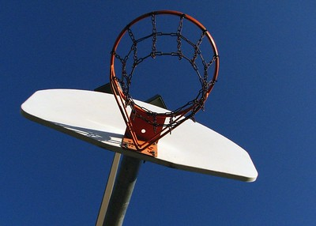

Mehr als 20 Kölner Sportvereine tragen das Kürzel DJK in ihrem Namen. Sie haben viele Gemeinsamkeiten und doch stets eine eigene, wechselvolle Geschichte. Bei DJK Südwest Köln gehen die Ursprünge zurück auf das Jahr 1920, als in der Sülzer Pfarrgemeinde St. Nikolaus die „DJK Rheinwacht“ als Turn- und Sportabteilung der katholischen Jugend gegründet wurde. Sieben Jahre später entstand in der im neuen Stadtteil Klettenberg gebildeten Pfarrei St. Bruno die „DJK Siegfriedia Klettenberg“. Beide Vereine nutzten die damalige Sportanlage Militärringstraße/ Berrenrather Straße – heute das Franz-Kremer-Stadion mit den Sportplätzen des 1. FC Köln . Fußball, Leichtathletik, Handball, Tischtennis und Wandern gehörten zum Angebot von Rheinwacht und Siegfriedia. Die Besonderheit: Wettkämpfe wurden zu dieser Zeit nur zwischen den einzelnen DJK-Vereinen ausgetragen. Man war katholisch und blieb unter sich.

Im Jahr 1934 wurde jegliche sportliche Betätigung von konfessionellen Verbänden verboten. Der deutsche DJK-Verband verlor seine Eigenständigkeit und wurde von den nationalsozialistischen Machthabern „gleichgeschaltet“. In der Folge lösten sich die beiden Sülz-Klettenberger Sportvereine auf. Erst lange nach den Kriegswirren, es war das Jahr 1952, formierten sie sich neu. Anders als in der Vorkriegszeit nahm man nun trotz Zugehörigkeit zum DJK-Verband als Mitglied im Deutschen Sportbund an allen Wettkämpfen der verschiedenen Fachverbände teil. Das Vereinsleben bestand allerdings nicht nur aus Sport. Sowohl „Rheinwacht“ als auch „Siegfriedia“ waren eng in die gesellschaftlichen Aktivitäten in Sülz/Klettenberg eingebunden. Man nahm regelmäßig an Karnevalsumzügen teil, feierte gemeinsam kirchliche Feste, machte Ausflüge in die Umgebung oder traf sich an der Kegelbahn. So entwickelten sich tiefe Freundschaften, die teilweise bis ins hohe Alter gepflegt wurden.